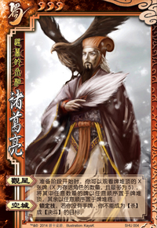
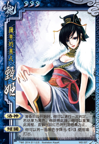
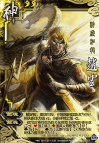
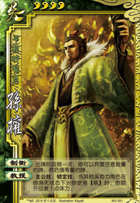
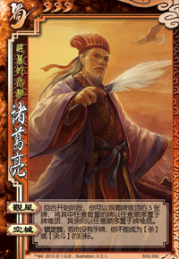
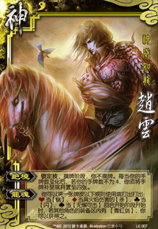
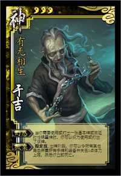

称号：少年将军
武将：赵云
势力：蜀
性别：男
体力上限：4勾玉
技能：
☆ 龙胆：你可以将一张【杀】当【闪】使用或打出，或将一张【闪】当普通【杀】使用或打出。
并级代表武将：经典标准版·关羽、林·贾诩、神·曹操，等等。
4、强级
单挑实力较强的武将所在的级别。
该级别中的武将通常是各类单挑比赛的热门选手，也经常被人们拿来研究特定的打法。
根据单挑实力超出一般武将的幅度，又可以细分为“强级下位”和“强级上位”两个更小的级别。
标准：有至少50%比率击败审核之一，同时不能通过凶级审核，视为强级。
审核员：经典标准版·诸葛亮

称号：迟暮的丞相
武将：诸葛亮
势力：蜀
性别：男
体力上限：3勾玉
技能：
☆ 观星：准备阶段开始时，你可以观看牌堆顶的X张牌，然后将任意数量的牌置于牌堆顶，将其余的牌置于牌堆底。（X为存活角色数且至多为5）
☆ 空城：锁定技，若你没有手牌，你不能被选择为【杀】或【决斗】的目标。
4.1、强级下位
单挑实力高出一般水平，开始被称为“单挑强将”的武将处于这一级别。
标准：在通过强级审核的基础上，不能通过强上位审核，视为强下位。
强级下位代表武将：经典标准版·貂蝉、经典标准版·吕布，等等。
4.2、强级上位
单挑实力一流，明显强于一般水平的武将位于这一级别。
该级别武将是公认的“单挑强将”，运气好的时候甚至可以向凶级武将发起冲击。
标准：在通过强级审核的基础上，有至少50%比率对审核之一保持不败，同时不能通过凶级审核，视为强上位。
审核员：经典标准版·甄姬、神·赵云

称号：薄幸的美人
武将：甄姬
势力：魏
性别：女
体力上限：3勾玉
技能：
☆ 洛神：准备阶段开始时，你可以进行判定：若结果为黑色，判定牌生效后你获得之，然后你可以再次发动“洛神”。
☆ 倾国：你可以将一张黑色手牌当【闪】使用或打出。

称号：神威如龙
武将：赵云
势力：神
性别：男
体力上限：2勾玉
技能：
☆ 绝境：锁定技，摸牌阶段，你额外摸X张牌。你的手牌上限+2。（X为你已损失的体力值）
☆ 龙魂：你可以将X张同花色的牌按以下规则使用或打出：红桃当【桃】；方块当火【杀】；黑桃当【无懈可击】；梅花当【闪】。（X为你的体力值且至少为1）
强级上位代表武将：☆SP·甘宁、神·司马懿，等等。
5、凶级
经常因为实力原因在各类单挑比赛被禁用、或者被选择出任BOSS的武将位于此级别。
该级别武将单挑实力顶尖，也因此经常被称作“超一流武将”或“单挑神将”。
标准：有至少50%比率击败审核之一，同时不能通过狂级审核，视为凶级。
审核员：经典标准版·孙权

称号：年轻的贤君
武将：孙权
势力：吴
性别：男
体力上限：4勾玉
技能：
☆ 制衡：阶段技，你可以弃置至少一张牌：若如此做，你摸等量的牌。
☆ 救援：（空壳技能）
凶级代表武将：神·吕蒙、☆SP·吕蒙、SP·最强神话、SP·夏侯氏，等等。
6、狂级
单挑实力逆天，已经超出一般单挑范围的武将所在的级别。
这一级别的武将通常有着超乎寻常的摸牌、控场能力或者异常强大的杀伤力。
拥有即死等特殊能力者也不在少数，往往是刻意设计、大幅强化甚至魔改的产物。
根据单挑实力超出普通武将的幅度，又可以细分为“狂级下位”和“狂级上位”两个更小的级别。
标准：有至少50%比率击败审核之一，同时不能通过神级审核，视为狂级。
审核员：测试·五星诸葛

称号：迟暮的丞相
武将：诸葛亮
势力：蜀
性别：男
体力上限：3勾玉
技能：
☆ 超级观星：准备阶段开始时，你可以观看牌堆顶的五张牌，然后将任意数量的牌置于牌堆顶，将其余的牌置于牌堆底。
☆ 空城：锁定技，若你没有手牌，你不能被选择为【杀】或【决斗】的目标。
6.1、狂级下位
开始超出一般单挑范围的武将所在的级别。
此级别中的武将，单挑实力还没有超出一般武将特别多，
但已经能较为轻松地击败绝大多数一般单挑范围内的武将了。
很多在原作中都是1v2甚至1vN的BOSS级武将。
狂级下位代表武将：测试·四庸袁术、SP·暴怒战神，等等。
标准：在通过狂级审核的基础上，不能通过狂上位审核，视为狂下位。
6.2、狂级上位
完全脱离一般单挑范围，开始脱离正常单挑范围的武将位于这一级别。
通常是刻意追求高强度、高性能、以及各种超能力的结果。
仅靠性能优势便可碾压一众武将的存在。
标准：在通过狂级审核的基础上，有至少50%比率对审核之一保持不败，同时不能通过神级审核，视为狂上位。
审核员：测试·高达一号

称号：神威如龙
武将：高达一号
势力：神
性别：男
体力上限：1勾玉
技能：
☆ 绝境：锁定技，摸牌阶段，你不摸牌。每当你的手牌数变化后，若你的手牌数不为4，你须将手牌补至或弃置至四张。
☆ 龙魂：你可以将一张牌按以下规则使用或打出：红桃当【桃】；方块当火【杀】；黑桃当【无懈可击】；梅花当【闪】。准备阶段开始时，若其他角色的装备区内有【青釭剑】，你可以获得之。
狂上审核高达一号，即测试版神赵云，为目前已知最强的官方设计武将。
据说在测试时，任何身份胜率均超过80%，单挑胜率100%，并且连续多次穿三成功。
由于强度过于失衡，后被改造成如今那个担当强上审核的版本。
特点是有着“恒四大连营”之称的超强摸牌能力和强大的卡牌转化能力。
然而，高达一号的弱点也比较明显。
针对其1勾玉的体力上限进行打击经常成为击破高达一号的有效手段。
所以许多狂上武将都有着“扣减对手体力上限”或者“制造大伤害”之类的能力。
狂级上位代表武将：经典再临·瑶池仙子、重镇固守·灵心筑（MAX版本），等等。
7、神级
彻底脱离正常单挑范围的武将所在的级别，同时也是单挑实力最强的一个级别。
几乎完全不再依赖卡牌而是纯粹凭借技能甚至规则击败对手。
大多拥有着即死、封印技能、替换对手武将、修改游戏结果等特殊能力。
而防御面也往往强大到几乎没有被对手以正常手段击破的可能。
标准：有至少50%比率击败审核之一，视为神级。
审核员：经典再临·掀桌于吉

称号：有无相生
武将：掀桌于吉
势力：神
性别：男
体力上限：3勾玉
技能：
☆ 幻惑：当你需要使用或打出一张基本牌或非延时性锦囊牌时，你可以视为使用或打出了该牌。
☆ 掀桌：限定技，出牌阶段，你可以令所有角色弃置所有手牌和装备并依次失去1点体力上限，然后你立即死亡。
神审核，特点是无限卡牌，将卡牌玩到极致的男人，被视为正常武将的顶点。
拥有能随时发动无限制卡牌一波的疯狂攻击力，以及无限制使用卡牌进行防御和回复的能力。
此外还拥有针对1上限对手的秒杀手段，实力非常恐怖。
不过值得注意的是，掀桌于吉虽然是神审核，自身却并不属于神级。
因为他不能击败自己，而神级的标准是要50%以上比率“击败”审核。
杀伤力的不足使得掀桌于吉仍然是一个狂级武将，属于狂级上位。
而经过针对性修改后的掀桌于吉EX（“掀桌”改为对手失去所有体力上限）才算勉强达到了神级的要求。
若要击败此武将，通常应具备以下能力之一：
（1）限制其使用【酒】、【桃】等牌进行回复的能力，通常为封印卡牌的能力。
（2）跳过濒死结算发动即死的能力，比如直接扣减体力上限的能力。
（3）封印技能（包括替换对手武将等）的能力。
同时，自身防御面还要有足够的硬度以应对其无限制的卡牌进攻。
能将其击败者，已经超出了正常武将的范畴，必然封神。
神级代表武将：经典再临·掀桌于吉EX、神化武将·北极（开幕觉醒开关开启）
8、论外
论外是为那些不适合分级制度的武将所特殊设定的级别。
这些武将之所以会被分到这个级别，主要有两个原因：
（1）受环境等因素影响，其实力表现浮动过大，不能确定其级别。
此类武将，对其进行多次审核，经常会发现其符合多个级别，跨度很大、难以定论。
（2）与其争论胜负、甚至说讨论单挑这件事，都是没有意义的。
此类武将，通常表现为“完全不会输”、“阻止游戏产生结果”，等等。
论外代表武将：风·于吉、山·左慈，等等。
三、自定义级别
在游戏目录下的lua/levels.lua中可以添加自定义级别，具体设定请参照已有级别进行。